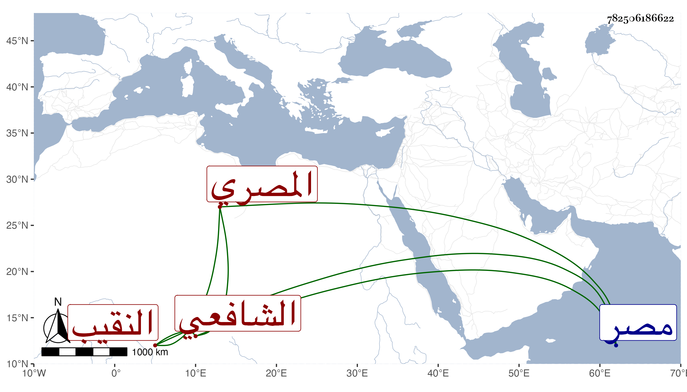

0902Sakhawi.DawLamic.ITO20230111-ara1.EIS1600.782506186622
Biography ID: 782506186622
116
محمد بن أحمد بن محمد بن البصيري بالموحدة أو النون تاج الدين المصري الشافعي النقيب بالخشابية ويعرف بابن الحراق . ذكره شيخنا في معجمه وقال إنه سمع من البهاء بن عقيل فمن بعده وله نظم وسط خط سريع ونوادر وحذق سمعت من فوائده كثيرا ، وكان يلقب فار الخلاء . مات بمصر في ربيع آخر سنة ثلاث ولم يكمل الستين ، ومن النوادر أن النجم البالسي قال لنا إن لقبه إذا صحف وعكس بقى فار خلا وكان الحراق .
